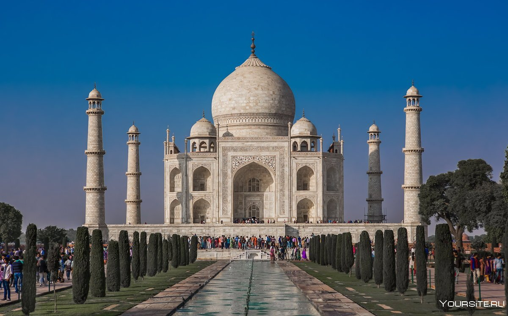
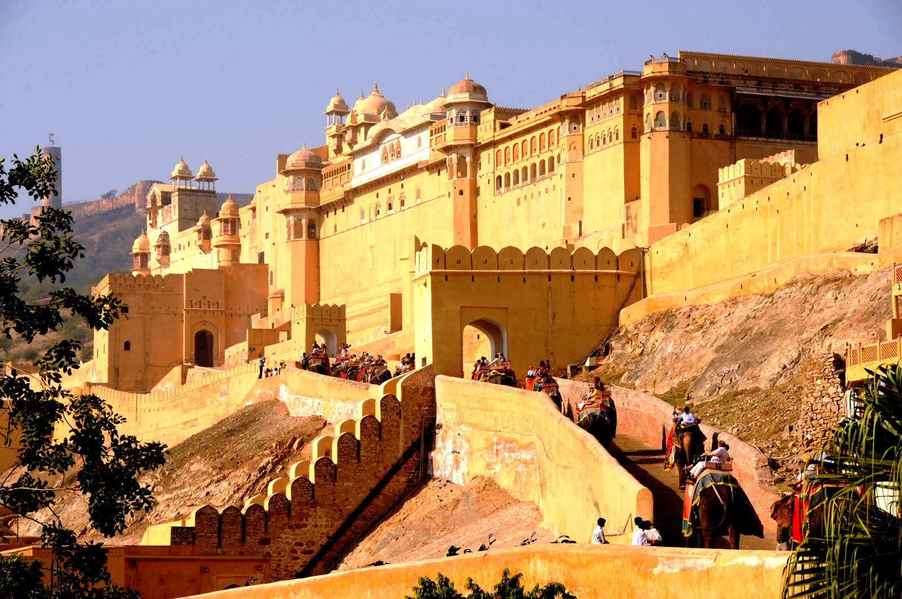
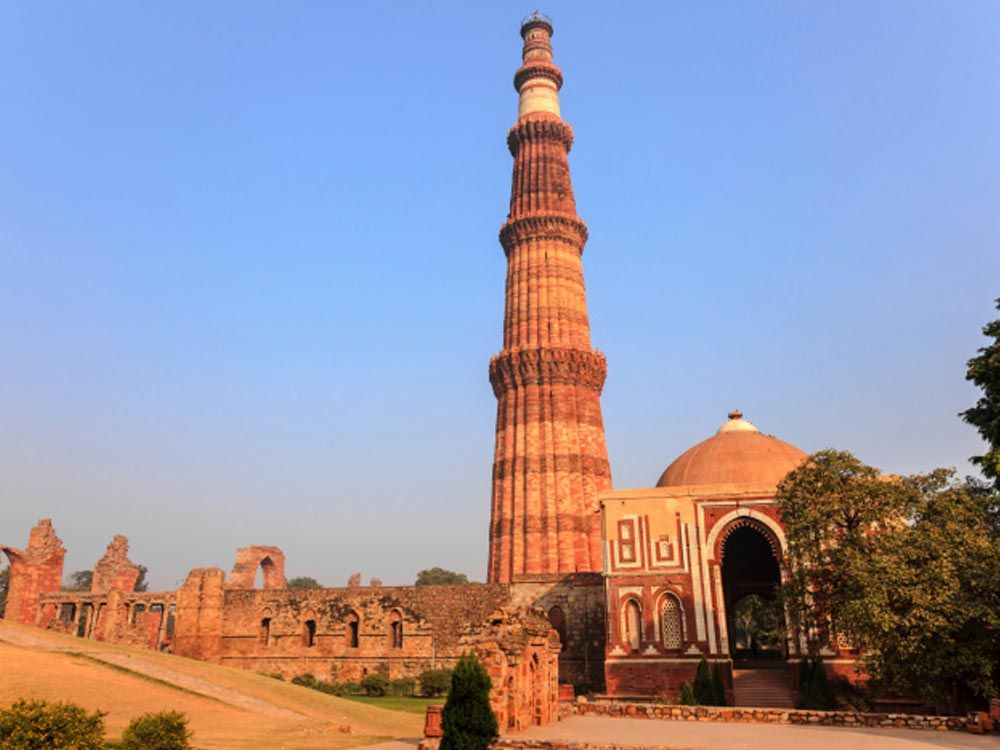
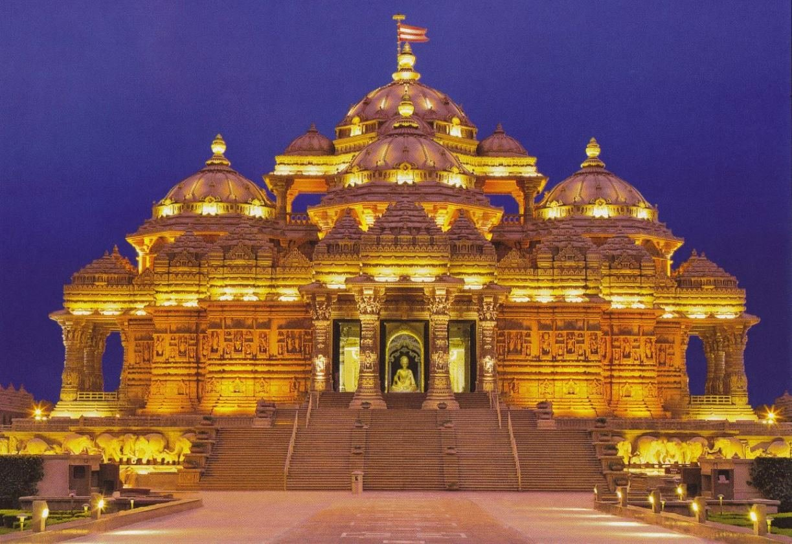

Индия
Приветствия и общение
Одно из самых популярных индийских приветствий — Намасте (намаскар или намаскарам). Этот уважительный способ сказать «привет», «до свидания» и «спасибо» выполняется жестом: ладони складываются вместе перед грудью, пальцами вверх, поднимаются над головой и делается легкий поклон. Если индиец покачивает головой из стороны в сторону — это означает «да», «спасибо» или указывает на понимание в зависимости от контекста разговора.
Традиции гостеприимства
В Индии есть поговорка «Атити дево бхава» — переводится как «Гость ваш Бог». Поэтому с гостями здесь обращаются как с королями, делают все, чтобы угодить. Как только гость переступает порог дома, ему сразу подают воду, а затем спрашивают о любых предпочтениях в еде. Индийские женщины — отличные повара и могут в мгновение ока приготовить восхитительные блюда. Индийцы никогда не отпустят гостя голодным или печальным. Большинство людей в Индии готовы помочь незнакомцу. Здесь любят туристов и с удовольствием побеседуют с ними обо всем: от новостей, сплетен и погоды до политики и науки. Произнесение Намасте — неотъемлемая часть традиций гостеприимства в Индии. Только таким образом каждый участник встречи приветствует друг друга. Дурным тоном у жителей Индии считается вовремя приходить в гости. Гораздо вежливее опоздать на 15–30 минут. Обычно приглашенные приводят с собой друзей. Хозяева не подают еду, а организуют шведский стол. За день до мероприятия гостям звонят — это считается правильным.
Еда
В каждом регионе Индии есть своя собственная кухня с фирменным блюдом или ингредиентом:
- в Гуджарате и Раджастане едят много вегетарианской пищи
- Керала (Южная Индия) славится своими рыбными блюдами
- в Бенгалии, Пенджабе и на севере страны предпочитают кухню муглай (еду, приготовленную с большим количеством мяса)
В блюда индийцы добавляют много разных трав и специй — они придают вкус, аромат и целебные свойства. Индийцы едят руками, чаще правой. Левая считается нечистой, как сказано в священных писаниях. Хорошей манерой считается делиться едой — индийцы, как правило, заказывают несколько блюд на всех в общей посуде. А вот брать еду с чужих тарелок нельзя, столовые приборы тоже у каждого свои. Признательность повару индийцы выражают похвалами еды, а европеец сказал бы: «Спасибо, было очень вкусно».
Туристические города
Обычно знакомство с Индией начинают с Дели, Агры и Джайпура — крупных городов на севере. Это самый популярный туристический маршрут, «Золотой треугольник Индии». На север устремляются огромные потоки паломников и туристов, чтобы посетить священный город Варанаси, подышать горным воздухом Шимлы и Армитсары. В центральной части Индии находится её финансовая столица, Мумбаи, и интеллектуальная столица — Калькутта. Продвигаясь дальше на юг, многие делают остановку в Бангалоре, который называют главным IT-центром республики. В южную Индию прилетают, чтобы погреться на пляжах Кералы, Карнатаки и Тамил-Наду. Здесь же расположены самые известные национальные парки, охраняющие редкую флору и фауну Индии. В штате Ченнаи можно познакомиться с дравидийской храмовой архитектурой, прогуляться среди чайных плантаций, а затем расслабиться на сеансе аюрведического массажа. В процессе знакомства с Индией мы с гидом передвигались по соседним штатам (сначала северным, потом — южным, а во время третьей поездки — центральным), чтобы посетить все интересные места. Однако вы можете выбрать другие маршруты, исходя из интересов. Например, те, кому нужен аюрведический лечений, обычно не выезжают за пределы Кералы, Ченнаи и соседних южных штатов. Любители зимних видов спорта выбирают северные города, а те, кто приезжают ради пляжей и знакомства с дикой природой, больше времени проводят на юге.
Популярные достопремечательности
Акшардхам, Нью-Дели
Дворец-крепость Амбер, Амер
Кутб-Минар
Акшардхам, Нью-Дели
